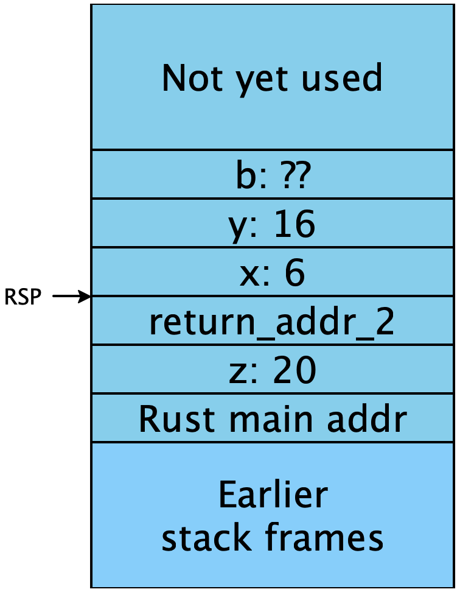
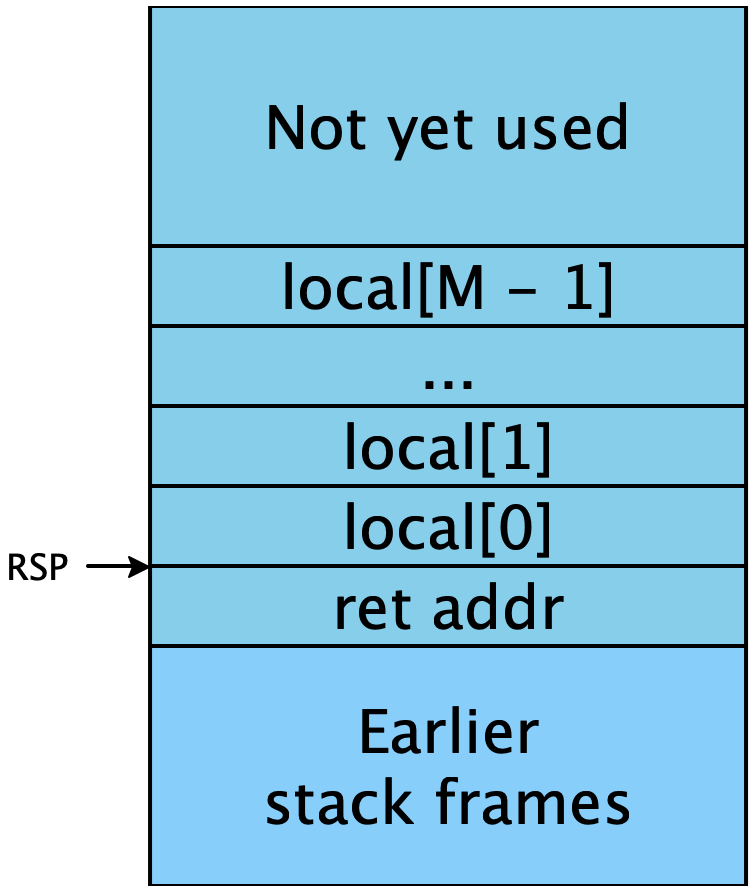
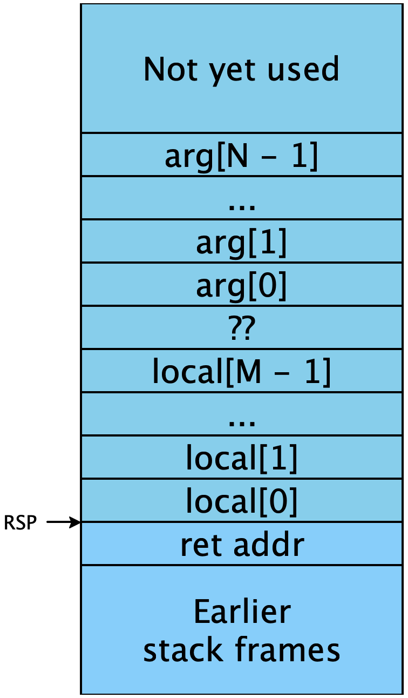
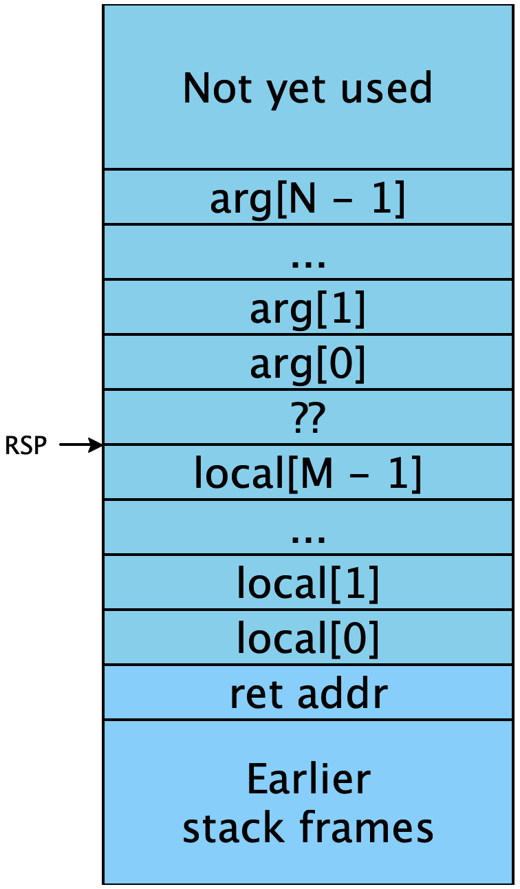

Lecture 7: Checking for errors and calling Rust functions
Where we left off last time, we could work with both numbers and
booleans in our program. Unfortunately, we had no way of ensuring
that we only worked with them consistently, as opposed to, say,
applying an arithmetic operation to boolean values. Let’s remedy
that. Our intended semantics is that when one of these errors occurs,
(1) an appropriate error message is printed out and (2) the program
should terminate with a non-zero exit code to indicate there was an
error. In order to keep our compiler relatively platform-independent
we will use our Rust runtime in stub.rs to implement printing
and exiting (since the Rust compiler developers have conveniently
already implemented the platform-specific details).
This means when an error happens in our compiled program, we need to call an appropriate Rust function, and pass it arguments to print an appropriate error message. So we need to understand what interface we have to calling Rust functions, what’s called a calling convention.
1 Checking for errors
Error handling is going to be a pervasive feature in our compiled output: we need to check the arguments and returned values of every operation are valid. That sequenece of checking instructions will appear at every location in the program that it’s needed. But the error handling itself is identical everywhere: we want to show some kind of message that describes the error that occured. So for example, we might want to check if a value is a number as follows:
... ;; get RAX to have the value we need
test RAX, 0x0000000000000001 ;; check only the tag bit of the value
jnz error_not_number ;; if the bit is set, go to some centralized error handler
error_not_number:
?????(The test instruction performs a bitwise-and of its two arguments and
discards the result, but sets the zero and signedness flags to be used with
conditional jumps.1test is to and the same way cmp is
to sub: they perform the same logical operation, but throw away the
results and keep only the flags. It’s convenient in this case, though for
more complex tag checks, we might need a cleverer sequence of assembly
instructions, possibly involving a second register as a temporary value.)
What code should we have at the error_not_number label? We’d like to be
able to be able to print some kind of error message when the arguments to an
operation are invalid. But our language doesn’t have any notion of strings
yet, so we have no way of representing a message, let alone actually printing
it. Fortunately, we have stub.rs available to us, and Rust does have
strings and printing. It’s not too hard to define a new function in
stub.rs that achieves the desired goal:
type ErrorCode = u64;
static ADD1_ERROR: ErrorCode = 0;
static ADD_ERROR: ErrorCode = 1;
#[export_name = "\x01snake_error"]
extern "sysv64" fn snake_error(err_code: u64, v: SnakeVal) {
if err_code == ADD1_ERROR {
eprintln!("add1 expected a number but got a boolean {}", sprint_snake_val(v));
} else if err_code == ADD_ERROR {
eprintln!("+ expected a number but got a boolean {}", sprint_snake_val(v));
} else {
eprintln!("I apologize to you, dear user. I made a bug. Here's a snake value: {}", sprint_snake_val(v));
}
std::process::exit(1);
}Here we have a function that takes in two arguments: an error code
which will be used to decide what the main error message is, and then
another argument with a value related to the error message. Then we
will use std::process:exit from the Rust standard library to do
the platform-specific operation of exiting the process with an
appropriate error code.
Now we need to figure out how to call this function from our compiled
assembly code programs. This is what the #[export_name = ...]
declaration and extern "sysv64" parts are for: the extern
"sysv64" says to make this function available to code we link with
using the System V AMD64 calling convention, which is the standard x64
calling convention for 64-bit Mac and Linux2Previously we used
extern "C", which means "use whatever my default C compiler
uses". We’ll use "sysv64" from now on to make it clearer that this
doesn’t really have anything to do with C, the language, and the
export_name says to make it available under the provided
name. This is the other side of the FFI from what we’ve already seen
with the start_here function: that allowed Rust to call us, and
now we need to understand how to call Rust back.
2 Calling Functions
Let’s take a step back and think about what it means to call a function. In high-level languages like Rust, C/C++, Java or Python, we have some notion of a procedure which includes several different ideas that are not present in assembly code:
Procedures can be invoked with different arguments
A procedure typically ends by returning some value to its caller
Procedures have access to local variables which are private in that other procedure cannot access them
Our machine doesn’t work with these primitives, instead these are high-level abstractions that are a convenient fiction for us programmers to use. Our assembly code works directly with the following:
Control proceeds to the next instruction unless we use a
jmpor one of its variant instructionsWe can store values in a fixed set of registers or somewhere in memory by using pointers, and all code is free to use any registers or access any memory it chooses3This is a security nightmare and so in practice we have both software and hardware-level techniques for stopping code from accessing memory it shouldn’t, but it’s a good first approximation to think about memory this way for the purposes of compilation.
So we see that one of the big differences is that while in our high-level languages, functions have some notion of “private variable”, in assembly code nothing enforces the distinction between values belonging to one function or another. In high-level language we have a kind of notion of private ownership, but in the implementation we have a global view of the registers and memory as a shared resource. So when we implement functions and function calls, we need to come up with a kind of protocol for functions to use to cooperate with each other so that we don’t accidentally overwrite memory that another function was planning to use. That is, we need to teach our functions how to share their resources.
The other big difference is that in our high-level language, we have an intrinsic notion of call-and-return, whereas in low-level code we really only have a single notion of a jump, which we will have to use to encode our call and return protocol. So when we return in assembly code, we need to know where to jump to! This is called the return address and it must be stored somewhere that the callee can access. And when we make a function call with arguments, we need to communicate somehow what the values of the arguments are. The only way we can do this is to use our shared resources: the registers and the stack.
A calling convention then, is simply a protocol for how a caller and a callee can cooperatively use the state of the machine. The main portions of a calling convention are to specify:
Where is the return address stored?
Where are the arguments stored?
When the callee returns, where should it store the return value?
Which parts of memory is the callee allowed to use?
Which registers can the caller expect to be preserved we the call returns?
To understand how to call a Rust function, we need to understand a bit about the C calling convention. The calling convention describes an agreement between the callers of functions and the callee functions on where to place arguments and return values so the other function can find them, and on which function is responsible for saving any temporary values in registers.
We’ve already encountered one part of the calling convention: “the answer goes
in RAX.” This simple statement asserts that the callee
places its answer in RAX, and the caller should expect to look for the
answer there...which means that the caller should expect the value of RAX
to change as a result of the call. If the caller needs to keep the old value
of RAX, it is responsible for saving that value before performing the
call: we say this is a caller-save register. On the other hand,
functions are allowed to manipulate the RSP register to allocate
variables on the stack. When the function returns, though, RSP must be
restored to its value prior to the function invocation, or else the caller will
be hopelessly confused. We say that RSP is a callee-save
register. In general, the calling convention specifies which registers are
caller-save, and which are callee-save, and we must encode those rules into our
compilation as appropriate.
2.1 System V AMD64 ABI
Here is a simple overview of the most relevant portions of the System V AMD64 ABI. We will use this whenever we call into Rust functions from assembly or vice-versa. The full gory details are in the official documentation.
(Return Address) Upon entry into the callee, the register
RSPwill point to the return address.(Stack Alignment) Upon entry into the callee, the value of
RSP + 8should be divisible by 16.(Arguments) The first six arguments go in registers
RDI,RSI,RDX,RCX,R8, andR9. Any further arguments are stored at higher addresses than the return address.(Free stack space) Upon entry into the callee, the memory at addresses above
RSPis free stack space for the callee, and the memory below this is owned by the caller.(Returning) To return, the callee should pop the return address off the stack (incrementing
RSP) and jumping to it.(Registers) The registers
RBP,RBX, andR12throughR15are callee-save, all other registers are caller-save.
So when we implement a function that is called using this calling convention with 9 arguments, the stack will look like this during the execution:

Arguments 1 through 6 are stored in registers, arguments 7 through 9 are on the stack, below the return address and we have our locals above the return address on the stack. Below the arguments, we have all of the caller’s used memory in the stack. We, the callee, should never touch this for fear of messing up our caller’s local variables.
So we can make a call using this convention by moving the first
6 arguments into the appropriate registers, then pushing the
remaining arguments onto the stack in reverse order, pushing the
return address and then jumping to the function we want to call. The
push instruction decrements RSP by one slot, and then
moves its argument into the memory location now pointed to by the new
RSP value. Pictorially,
Initial |
|
|
|
|
 |
|  |
|  |
The final step of pushing a return address and then jumping
somewhere is so common in calling con ventions that x64 has a built-in
instruction for it: call. Every instruction exists at some address in
memory, and the currently executing instruction’s address is stored in
RIP, the instruction pointer. Our assembly code should
never modify this register directly. Instead, the call
instruction first pushes a return address describing the
location of the next instruction to run —RIP just after the call instruction itself —
Putting these instructions together can implement error_not_number as follows.
First we need to declare at the beginning of our generated assembly that we expect our rust code to define a symbol ‘snake_error‘
section .text
global start_here
extern snake_errorThen we define a block that calls the snake_error function.
error_not_number:
mov RSI, RAX ;; Arg 2: the badly behaved value
mov RDI, 1 ;; Arg 1: a constant describing which error-code occurred
call snake_error ;; our error handlerExercise
The above has a subtle bug, which may or may not cause a segfault on your machine(!) What is it? We fix it below.
2.2 Protecting our Local Variables
Our snake_error function is a bit of a simple case, it never
returns! For the next homework we will implement a function
print that prints out a snake value to the user. If we try to
do the simple call code above for that, we will run into problems with
our stack! Why? Well when we call, we push the return address
onto the stack and decrement RSP. But we store our local
variables in the addresses below RSP so this will overwrite our
first local variable. Even worse, the callee, following the calling
convention, will be free to use the remaining addresses below
RSP to store their local variables, meaning potentially
all of our local variables will get overwritten in the process.
The solution is simple: before we execute the call instruction,
we need to decrement RSP so that our local variables will
be safely in "caller space" when the callee is running, and then upon
return, we increment RSP back to where it was4Some
of you may be familiar with alternative implementations where we use
an additional register RBP as the base of our stack frame. This
is only necessary if the stack frame has dynamic size. Since our snake
languages will all have statically bounded frame sizes, we will, like
many modern compilers, only use RSP so that RBP is free to
use as an additional work register..
So say we have 2 local variables, stored at offsets [RSP - 8]
and [RSP - 16], then to call a print function that takes
one argument we can do it as follows:
mov RDI, arg ;; the argument to be printed
dec RSP, 16 ;; "save" our local variables on the stack
call print
inc RSP, 2 * 8 ;; restore our stack pointer to the base of our stack frame
...2.3 Alignment
Depending on your computer, the above code may not work because it
breaks the System V AMD64 calling convention! The reason is the one
part of the calling convention we haven’t yet addressed: stack
alignment. Upon entry into the callee, the value of RSP + 8
should be divisible by 165The reason this is enforced by the
calling convention is simply to make it more convenient to use
instructions, such as SIMD instructions that require 16-byte
alignment.. Since a call instruction pushes a value onto the stack,
and we are always working with 64-bit, i.e., 8 byte values, this means
before the call instruction the value of RSP should be
divisible by 16. So every time we start executing a function we are
precisely misaligned, and so we need to ensure that when we save our
local variables, we always save an odd number of 8-byte stack
"slots" to re-align the stack. Our prior examples saved 0 and 2
respectively, so neither correctly implemented the calling
convention. Instead, if we have an even number n of stack slots, we
should round up and push n+1.
How do we know how many locals we have? Consider how the environment grows and shrinks as we manipulate an expression: its maximum size occurs at the deepest number of nested let-bindinngs. Surely we’ll never need more locals than that, since we’ll never have more names in scope at once than that!
Exercise
Construct a function
count_varsthat computes this quantity. Work by cases over the AST in sequential form.
This is a safe over-approximation that can be computed before running
your compile_to_instrs function, but feel free to do something
smarter for each function call if you want something more
space-efficient.
If your code ran fine even though it was misaligned, then you may find that it doesn’t work when you submit to gradescope! So if you get bizarre errors from gradescope you cannot replicate on your machine I recommend you check your stack alignment first.
Do Now!
Draw the sequence of stacks that results from our error-handling code, using this more precise understanding of what belongs on the stack.
2.4 Saving/Restoring Registers
For now, we keep all locals on the stack, and all registers are just used for scratch space. Now that we understand the calling convention better, we should just make sure we aren’t using any of the callee-save registers as scratch registers. We’ll learn more about saving/restoring registers later in the course when we start using them for our locals.
3 Putting the pieces together
Our compiler should now insert type checks, akin to the test instruction
with which we started this lecture, everywhere that we need to assert the type
of some value. We then need to add a label at the end of our compiled output
for each kind of error scenario that we face. The code at those labels should
move the offending value (likely in RAX) into RDI, followed
by the error code into RSI, and then call the snake_error function in
stub.rs. That function must be elaborated with a case for each kind of
error we face.
We will also need to use count_vars or some similar strategy to
correctly adjust our stack before a call, always making sure to align
the stack properly.
4 What calling convention to use?
This is our first brush with calling conventions, but it won’t be nearly the last. We used the System V AMD64 calling convention because that’s what the Rust compiler knows how to generate, but that doesn’t mean we need to use it for functions in our source language (as we’ll do soon) that call other functions from the source language. The calling convention is just the protocol for a single call, it doesn’t require at all that all of the stack frames on the stack came from the same calling convention. In fact, we will use a custom calling convention for our own internal calls, which will be preferable in certain ways to the System V calling convention.
5 Testing
Our programs can now produce observable output! Granted, it is only complaints about type mismatches, so far, but even this is useful.
Exercise
Construct a test program that demonstrates that your type testing works properly. Construct a second test program that demonstrates that your
ifexpressions work properly, too. Hint: sometimes, “no news is good news.”
Exercise
Enhance your compiler with a new unary primitive,
1test is to and the same way cmp is
to sub: they perform the same logical operation, but throw away the
results and keep only the flags.
2Previously we used
extern "C", which means "use whatever my default C compiler
uses". We’ll use "sysv64" from now on to make it clearer that this
doesn’t really have anything to do with C, the language
3This is a security nightmare and so in practice we have both software and hardware-level techniques for stopping code from accessing memory it shouldn’t, but it’s a good first approximation to think about memory this way for the purposes of compilation.
4Some
of you may be familiar with alternative implementations where we use
an additional register RBP as the base of our stack frame. This
is only necessary if the stack frame has dynamic size. Since our snake
languages will all have statically bounded frame sizes, we will, like
many modern compilers, only use RSP so that RBP is free to
use as an additional work register.
5The reason this is enforced by the calling convention is simply to make it more convenient to use instructions, such as SIMD instructions that require 16-byte alignment.